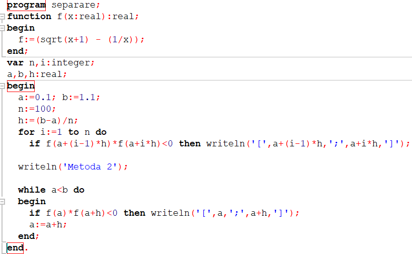
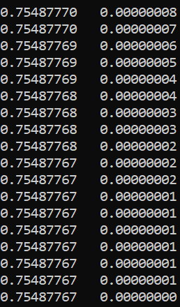

Metoda Separare
Pentru Metoda de separare este utilizat un program facut pe o metoda mai speciala.
Programul in sine este aici:

Dacă soluţiile ecuaţiei f´(x)=0 pot fi uşor calculate, atunci, pentru a separa soluţiile f(x)=0, este necesar:
1. să se determine soluţiile distincte a ≤ x1 ≤ x2 ≤ ..., ≤ xn ≤ b ale ecuaţiei f´(x)=0;
2. considerînd a = x0 şi b = xn+1, să se calculeze valorile f(x0), f(x1), ..., f(xn+1).
Segmentele[xi, xi+1], i = 0, ..., n, pentru care f(xi) × f(xi+1) < 0 vor conţine cîte cel puţin o soluţie a ecuaţiei f(x)=0.
Rezultatele programului sunt vazute aici:

Rezultatul final este cel cerut, si anume ca unui x care trece prin functie i se atribuie valoarea 0
Inapoi